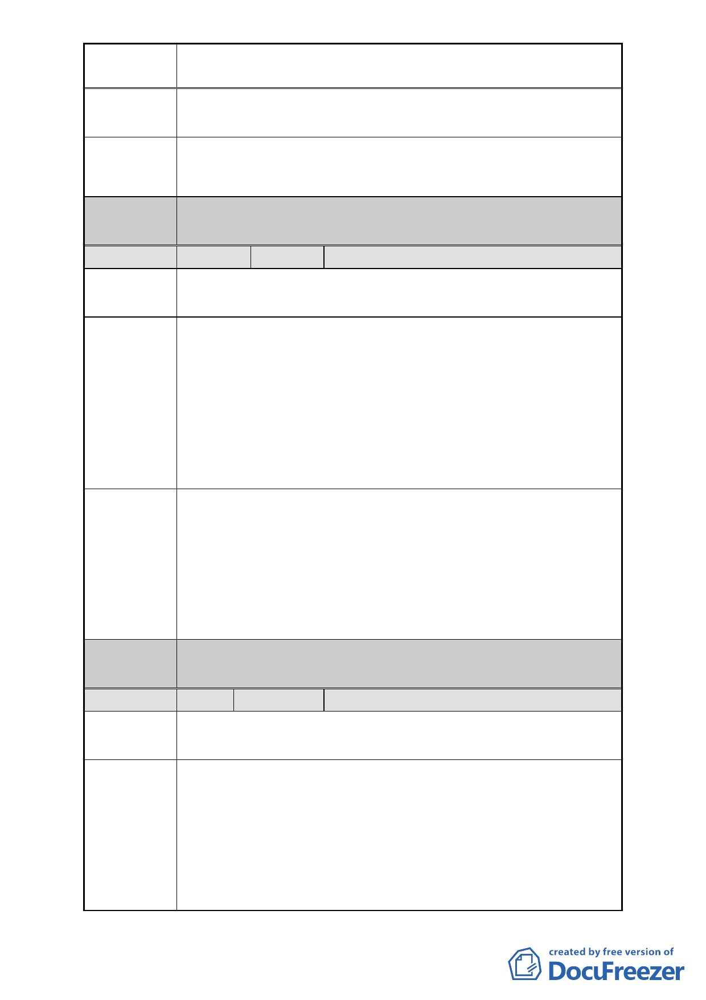

案名
變更臺北市中正區南海段一小段 719、724 地號等 2 筆停車場
用地為廣場用地細部計畫案
卻要百姓拆屋還地，應法應訴之司法院，百姓權益不適用於
行政法院管轄，以維護百姓權益。
建議辦法
廣場設置之需求，並非重要建設，不可拆除原住戶之房屋，
而影響該原有住戶生計。
委員會
決議
編號
陳情地點
陳情理由
建議辦法
委員會
決議
編號
陳情地點
陳情理由
同編號 1。
7 陳情人 陳照一
中正區南海段一小段 719 地號
中正區寧波東街 1-2 號
此區離中正紀念堂只不過幾百公尺，且中正紀念堂廣場佔地
有三十甲左右，何需再多一個小廣場，這個廣場莫非是要給
廣東同鄉會作為後院使用嗎？
這塊地用途一變再變，從最初公園預定地，六十七年曾經變
更為住商用地，之後變更為停車場用地，現在又要變更為廣
場用地，空蕩蕩的土地閒置於市中心能看嗎？對市容是否有
助益呢？為何不將它變成住商呢？再說郝市長選前政見提出
臺北市要都市更新，這不是剛好實現市府的改建嗎？
希望都市更新委員們能考慮將此塊地變更為住商之建議，給
我們這些從日據時代一直居住到現在的老住戶們保留最後的
居住權，每位住戶都至少住了五、六十年，都還能繼續安心
在台灣這片土地上生活。
希望主辦單位工務局改由交通捷運局主辦，目標朝捷運共
構、聯合開發，讓原住戶能就地安置，達成雙贏。
市民要求參加都發局審議開會。
同編號 1。
8 陳情人 中華民國雜誌事業協會
中正區南海段一小段 719 地號
中正區羅斯福路一段 43 號
有關中正區南海段 1 小段 719 號由停車場用地變更為廣場用
地，意見 1.擇期重開說明會。2.建請取消作為廣場用地。3.
建請將本用地變更為住商用地，由原住戶價購或將原住戶就
地安置。
1.要求重新擇期召開說明會：
貴會於民國 99 年 11 月 30 所召開之說明會僅 10 分鐘即結
束，是為敷衍了事，詳細資料亦未發給原住戶，致使住戶
-9-